1.1. Hyper-V使用
1.1.1. 1.找Hyper-V功能
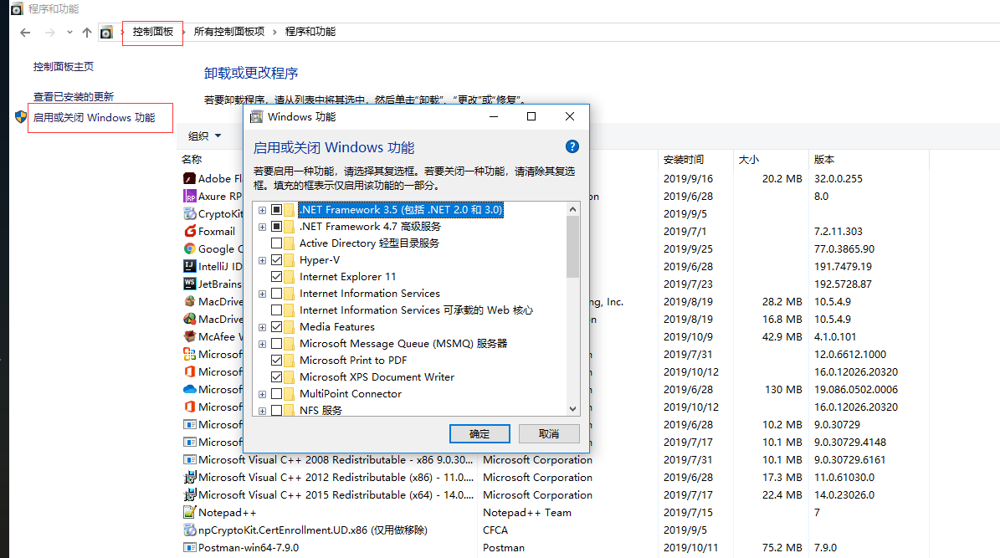
1.1.2. 2.开启服务
点击确定按钮后，系统提示重启，重新启动系统
1.1.3. 3.安装虚拟机
1.启动应用服务
重启系统后，在应用程序下查找Hyper-V服务
2.新建虚拟机
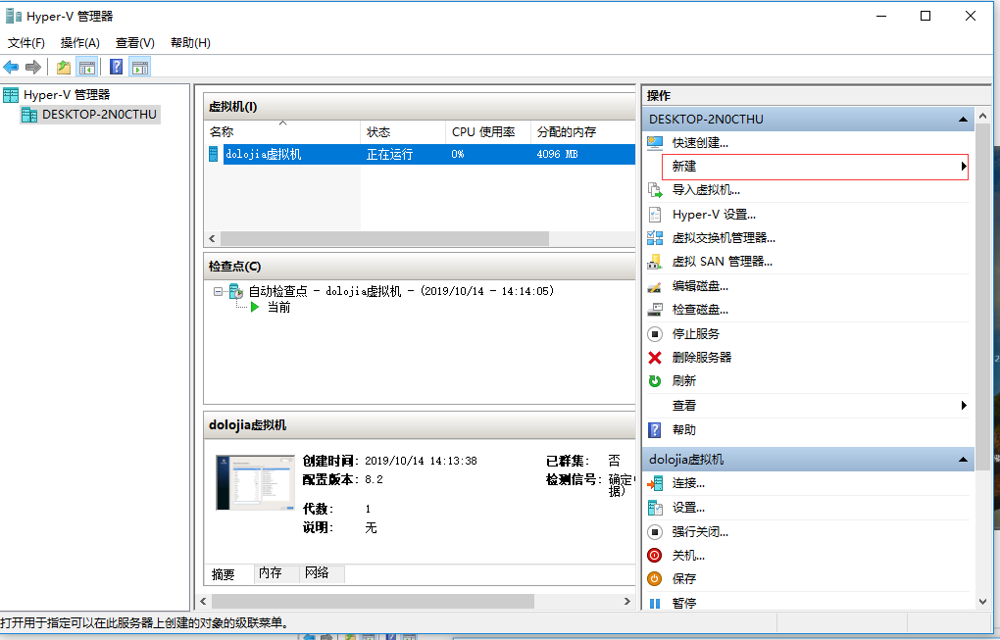
3.自定义名称及存放路径
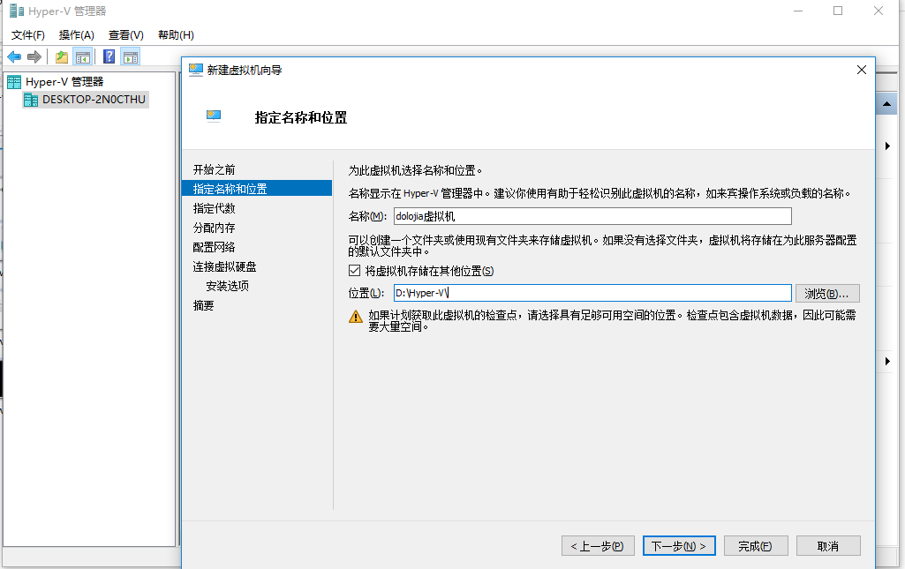
4.选择代
- 请选择[第一代]，否则后面安装CentOS会出错
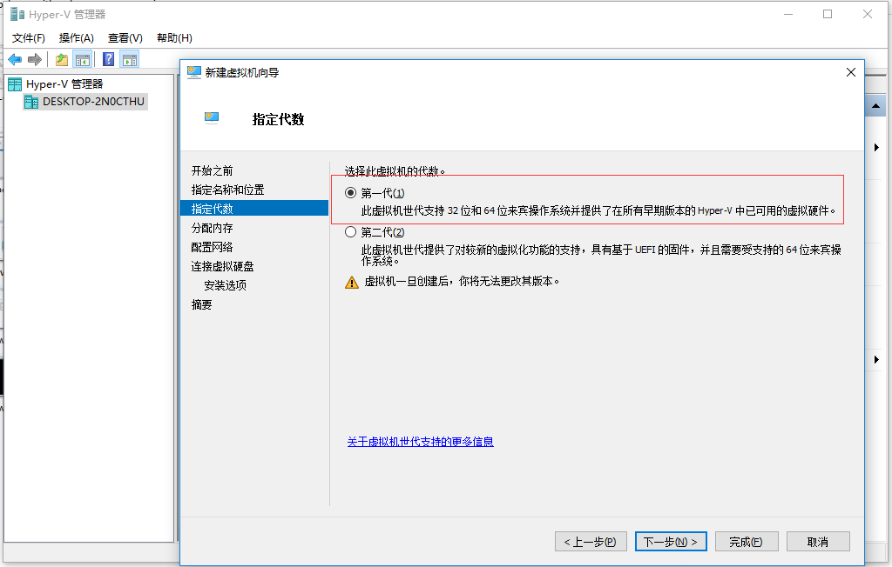
5.分配内存
- 根据自身机器情况分配内存
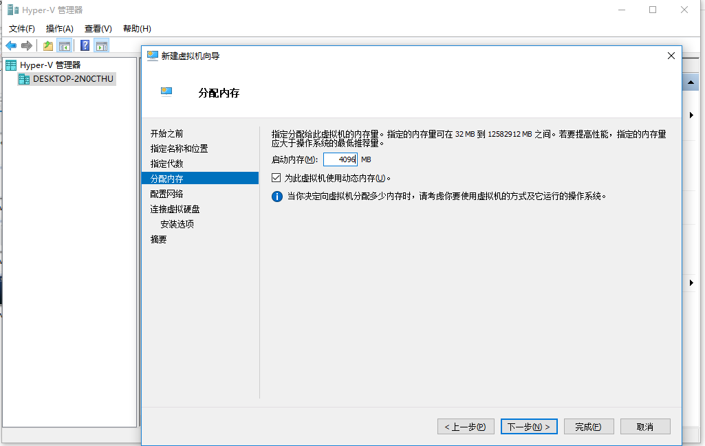
6.配置网络
- 先不配置，默认即可
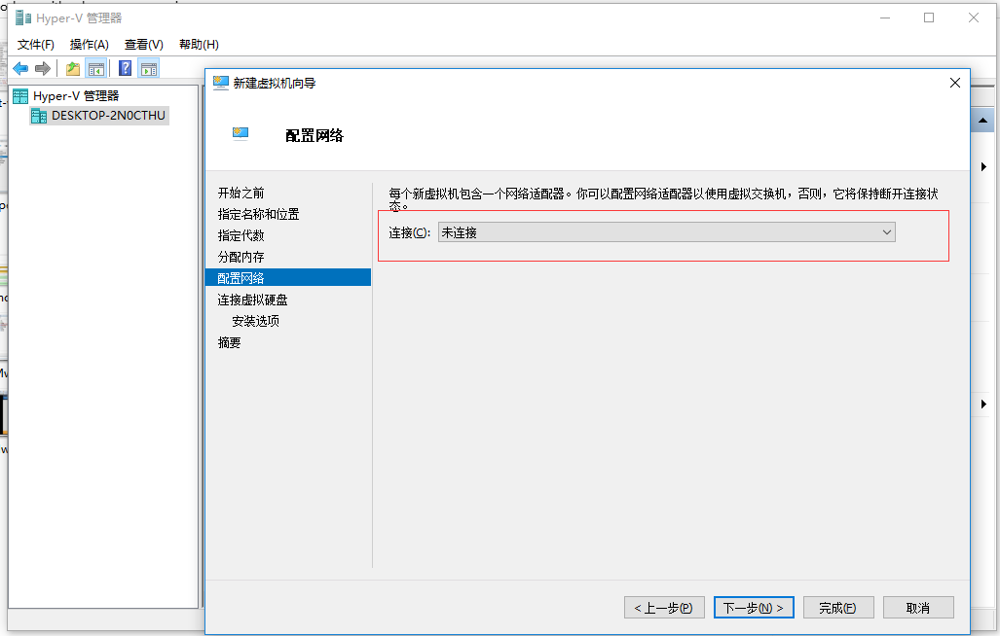
6.虚拟硬盘配置
- 选择创建虚拟硬盘，点击下一步
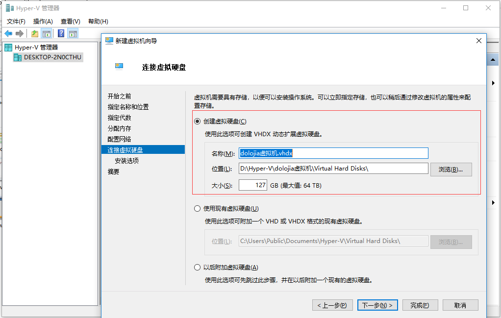
7.安装选项配置
- 选择第二个，设置下载好的iso镜像
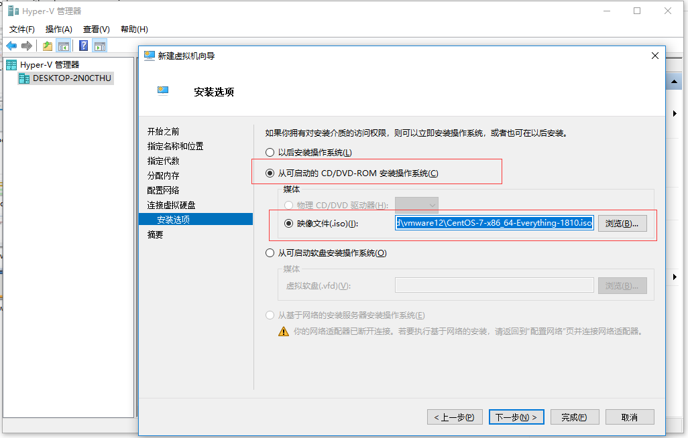
8.点击完成
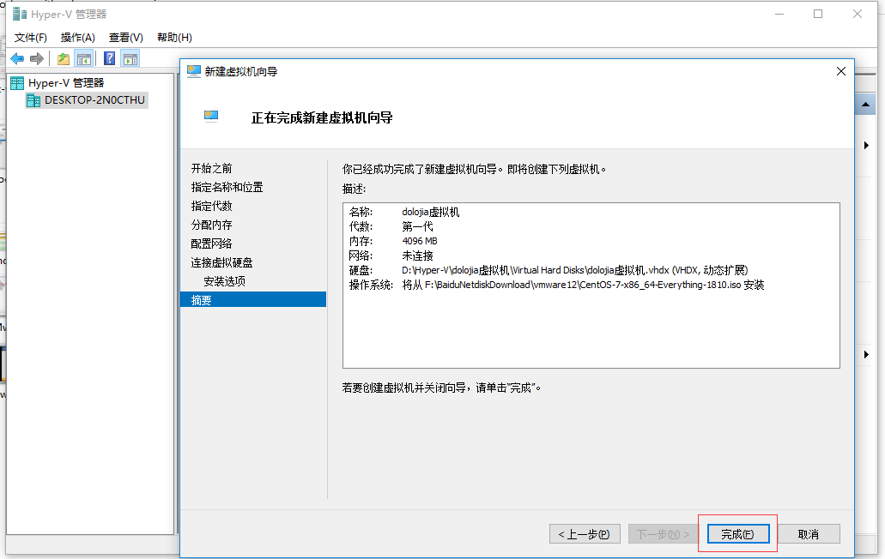
9.启动虚拟机
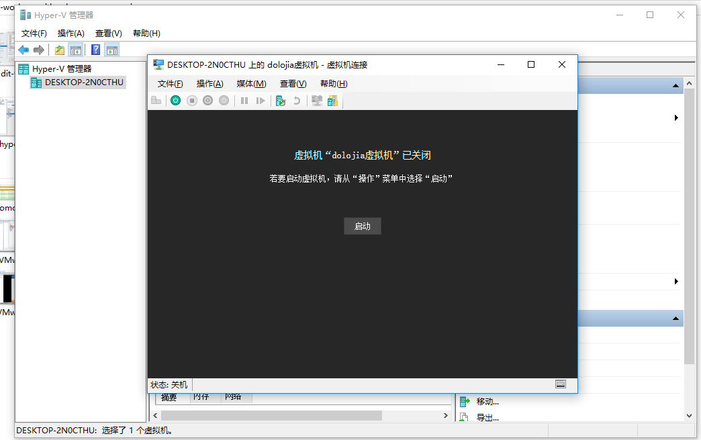
1.1.4. 4.虚拟机安装
- 请参考另一篇文章虚拟机安装中的虚拟机安装【g)开始安装】设置部分
- ...
- 等待安装完成
1.1.5. 5.网络设置
1.首先创建个虚拟交换机
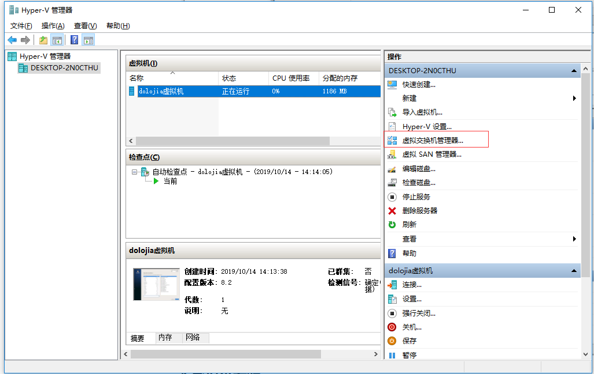
2.选择外部，点击创建
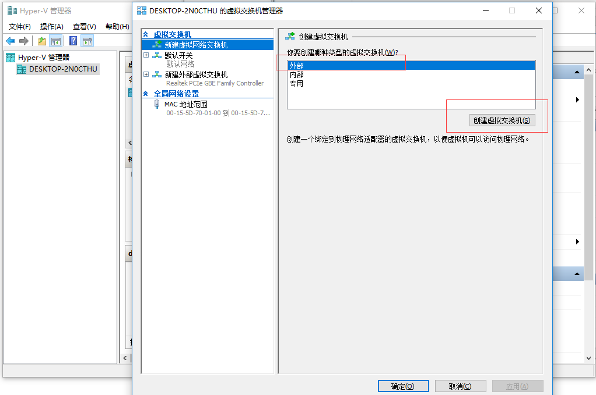
3.选择你要连接的网卡，一般选择能上网的真实网卡
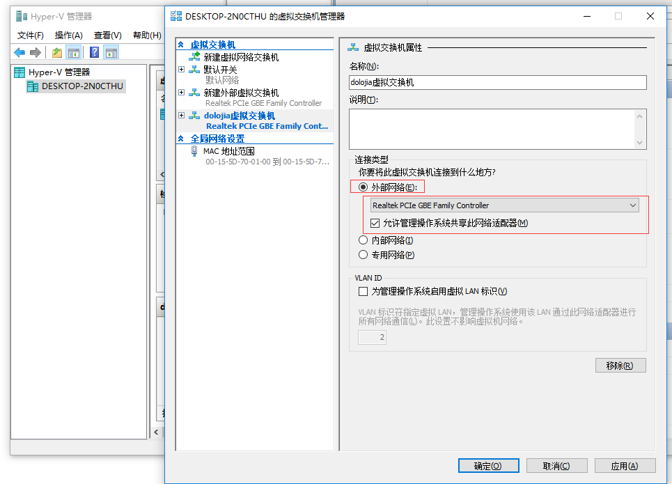
4.点击设置
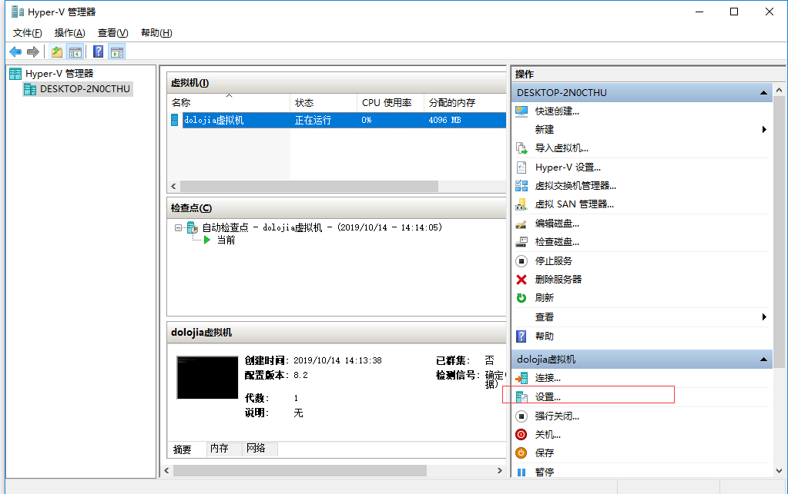
5.选择刚刚创建的网络虚拟交换机
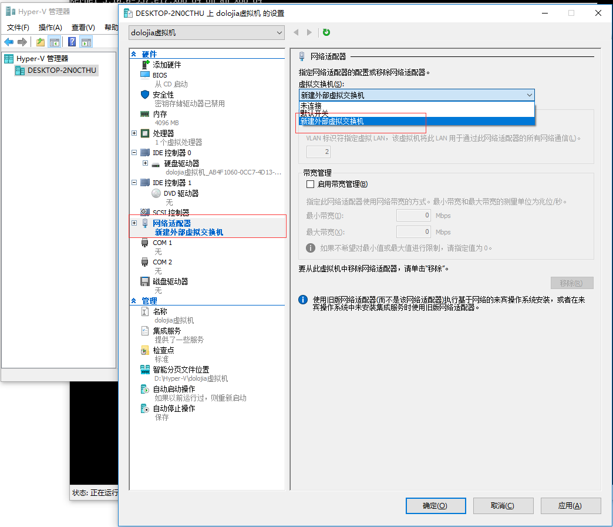
6.重启下centos,然后编辑你的第一个网卡（一般情况）
[root@localhost ~]# cd /etc/sysconfig/network-scripts/
[root@localhost network-scripts]# vi ifcfg-eth0
7.再配置里面这个改成yes

8.然后重启网络
[root@localhost network-scripts]# service network restart
Restarting network (via systemctl): [ ok ]
9.查看下ip,已经自动分配ip了

10.测试一下访问百度也可以访问了